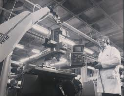
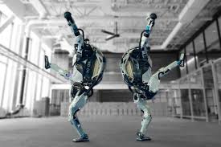
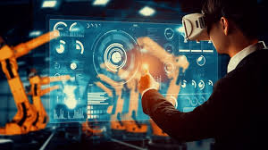
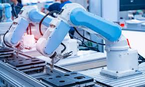
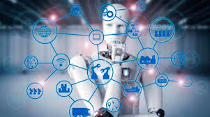

La historia de la robótica es un fascinante viaje que abarca varios siglos, mostrando cómo la imaginación y la ingeniería han transformado nuestra capacidad para crear máquinas que imitan, y en muchos casos superan, las capacidades humanas. Desde los primeros autómatas de la antigüedad hasta los robots humanoides avanzados de la actualidad, la evolución de la robótica refleja no solo avances tecnológicos, sino también cambios en nuestra comprensión de la mecánica, la informática y la inteligencia artificial.
La evolución de la robótica es un testimonio del ingenio humano y su capacidad para superar desafíos tecnológicos. Desde simples mecanismos hasta sofisticados sistemas de inteligencia artificial, la historia de la robótica continúa avanzando, prometiendo un futuro donde las máquinas no solo nos asistan, sino que también colaboren con nosotros de maneras cada vez más integradas y eficientes.
Antecedentes Antiguos
**Antecedentes Antiguos**:
La idea de autómatas y máquinas que imitan a los seres vivos se remonta a la antigüedad. Desde los autómatas mecánicos de la antigua Grecia hasta los relojes de agua en China, la humanidad siempre ha buscado formas de automatizar tareas.

Los antecedentes antiguos de la robótica se remontan a civilizaciones antiguas como la griega, la egipcia y la china, donde se encontraban mitos y relatos de autómatas y criaturas mecánicas. Por ejemplo, en la mitología griega, se mencionan figuras como Talos, un autómata de bronce construido por Hefesto para proteger Creta. En el Antiguo Egipto, se tienen registros de mecanismos y dispositivos ingeniosos, como el famoso reloj de agua de Clepsidra.
Además, en la antigua China, se desarrollaron mecanismos como los relojes de agua y los autómatas de juguete. Sin embargo, el primer "robot" documentado en la historia fue el autómata de Leonardo da Vinci, diseñado en el siglo XV. Este robot, conocido como el "hombre de Vitruvio", era un dispositivo mecánico diseñado para moverse y ejecutar funciones humanas básicas. Aunque estos primeros intentos no se parecían a los robots modernos, sentaron las bases para el desarrollo posterior de la robótica.
**Revolución Industrial**:
El surgimiento de la Revolución Industrial en el siglo XVIII marcó el inicio de la automatización a gran escala. Máquinas como telares mecánicos y locomotoras a vapor transformaron la producción y el transporte.
Los antecedentes industriales de la robótica se remontan al siglo XVIII con la Revolución Industrial, que marcó un cambio significativo en la producción mediante la introducción de maquinaria y tecnologías automatizadas. Sin embargo, el desarrollo de lo que reconocemos hoy como robots industriales comenzó en la década de 1950, cuando George Devol patentó el primer robot industrial programable, llamado Unimate, que se utilizó en una línea de producción de General Motors en 1961.
Estos robots eran grandes y limitados en sus capacidades, pero sentaron las bases para la automatización en la fabricación. En las décadas siguientes, se produjo un rápido avance en la tecnología de robótica industrial, con mejoras en la precisión, la velocidad y la capacidad de los robots, así como en la programación y control de sus movimientos. Esto llevó a una mayor adopción de robots en una amplia gama de industrias, desde la automotriz hasta la electrónica y la alimentaria, transformando radicalmente los procesos de producción y mejorando la eficiencia y la calidad del producto.
**Robotica Moderna**:
El término "robot" fue acuñado por primera vez por el escritor checo Karel Čapek en su obra de teatro "R.U.R." (Robots Universales Rossum) en 1920. Sin embargo, el concepto moderno de robótica se desarrolló a partir de los avances tecnológicos del siglo XX.

La robótica moderna se caracteriza por una integración más avanzada de tecnologías como la inteligencia artificial, el aprendizaje automático, la visión por computadora y la sensorización, lo que permite a los robots realizar una variedad de tareas con mayor autonomía, adaptabilidad y precisión. Los robots modernos van más allá de las aplicaciones industriales y se utilizan en una amplia gama de sectores, incluidos la medicina, la agricultura, la logística, la exploración espacial, la atención al cliente y el entretenimiento.
Además, los avances en la miniaturización y la movilidad han dado lugar a una nueva generación de robots móviles y drones, capaces de operar en entornos diversos y dinámicos. La colaboración hombre-máquina también es una característica destacada de la robótica moderna, donde los robots trabajan codo a codo con los humanos en entornos compartidos, ya sea en fábricas, hospitales o almacenes. En resumen, la robótica moderna está en constante evolución, impulsada por avances tecnológicos que amplían sus capacidades y aplicaciones en nuestra vida cotidiana.
Robótica Moderna
**Cibernética y Automatización**:
Durante la Segunda Guerra Mundial, los esfuerzos en cibernética y control automático llevaron al desarrollo de sistemas de control avanzados, sentando las bases para la robótica moderna.

Históricamente, la interacción entre la cibernética y la automatización ha sido fundamental en el desarrollo de la robótica y otros sistemas tecnológicos. Desde sus inicios en el siglo XX, la cibernética ha proporcionado los fundamentos teóricos y los modelos matemáticos para comprender y controlar sistemas complejos, mientras que la automatización ha permitido la implementación práctica de estos conceptos en sistemas que funcionan de manera autónoma. A medida que avanza el siglo XXI, esta relación continúa evolucionando con los avances en inteligencia artificial, aprendizaje automático y robótica colaborativa, que combinan los principios de la cibernética con la automatización para crear sistemas cada vez más sofisticados y adaptativos, capaces de realizar una amplia gama de tareas en entornos diversos y dinámicos.
**Robótica Industrial**:
En la década de 1960, surgieron los primeros robots industriales, como el Unimate, diseñado por George Devol y Joseph Engelberger. Estos robots eran utilizados principalmente en entornos de fabricación para tareas repetitivas y peligrosas.

La robótica industrial ha experimentado una evolución significativa desde sus inicios en la década de 1960, cuando se introdujeron los primeros robots en las líneas de producción de la industria manufacturera. Estos robots, como el Unimate de George Devol, inicialmente se utilizaron para tareas repetitivas y peligrosas en entornos controlados, como la soldadura y el ensamblaje en la industria automotriz. A medida que avanzaba el tiempo, los robots industriales se volvían más versátiles y precisos, integrando avances en la tecnología de sensores, actuadores y sistemas de control.
La introducción de la programación basada en lenguajes más intuitivos y el desarrollo de sistemas de visión por computadora permitieron a los robots adaptarse a entornos más variables y colaborar de manera segura con los trabajadores humanos en las líneas de producción. Hoy en día, la robótica industrial abarca una amplia gama de aplicaciones, desde la fabricación de automóviles hasta la electrónica y la industria alimentaria, donde los robots desempeñan un papel crucial en la mejora de la eficiencia, la calidad y la seguridad en los procesos de producción. Con la continua integración de tecnologías como la inteligencia artificial y el Internet de las cosas, se espera que la robótica industrial siga evolucionando hacia sistemas más autónomos y adaptables, capaces de responder de manera inteligente a los cambios en el entorno y las demandas del mercado.
**Avances en Inteligencia Artificial**:
A medida que la inteligencia artificial avanzaba, los robots se volvían más sofisticados, capaces de realizar tareas más complejas y adaptarse a entornos cambiantes.

En las últimas décadas, los avances en inteligencia artificial han sido impresionantes, principalmente gracias al desarrollo de modelos de aprendizaje profundo, que han revolucionado áreas como el reconocimiento de imágenes, el procesamiento del lenguaje natural y la toma de decisiones autónomas. Estos modelos, impulsados por redes neuronales artificiales de múltiples capas, han permitido avances significativos en aplicaciones como la conducción autónoma, la medicina diagnóstica y la personalización de servicios en línea, mientras que la investigación continua en ética y seguridad busca abordar los desafíos asociados con el uso responsable de esta tecnología.
Antecedentes Historicos
A Continuación La Recopilacion en una tabla con los antecedentes históricos de la robótica que marcaron historia en el area, que cubre desde la antigüedad hasta el siglo XXI.
Período
Evento/Desarrollo
Descripción
Siglo XIX
Autómatas de Herón de Alejandría
Diseño de una máquina mecánica programable, considerada el precursor de las computadoras modernas.
Principios del siglo XX
Juguetes mecánicos en la China medieval
George Devol y Joseph Engelberger desarrollaron el primer robot industrial en 1961, utilizado para manejar piezas de metal caliente en General Motors.
1950s
Isaac Asimov y las Tres Leyes de la Robótica
Asimov formuló sus famosas Tres Leyes de la Robótica en 1942, que influenciaron el pensamiento y desarrollo ético en robótica.
1970s
Primer robot médico: Puma 560
Este robot, desarrollado por Victor Scheinman, comenzó a ser usado en cirugías a finales de los 70, marcando el inicio de la robótica médica.
1990s
Aibo de Sony
Lanzamiento en 1999 del primer robot mascota comercial, Aibo, un perro robot que podía aprender y adaptarse al entorno.
2000s
Robots humanoides avanzados: ASIMO de Honda
En 2000, Honda presentó ASIMO, un robot humanoide avanzado capaz de caminar, correr y realizar interacciones sociales básicas.
2010
Avances en IA y robótica social
Desarrollos significativos en inteligencia artificial y robots sociales como Pepper y Sophia, capaces de interactuar de manera más natural con humanos.
2020
Implementación de robots en diversos campos
Uso extendido de robots en medicina, agricultura, exploración espacial y doméstica, incluyendo drones y robots colaborativos (cobots).